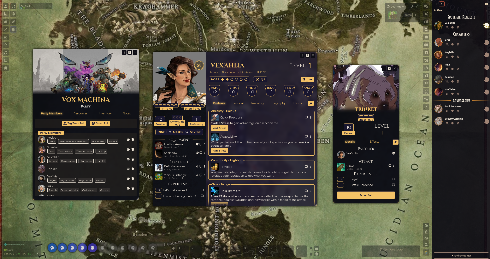
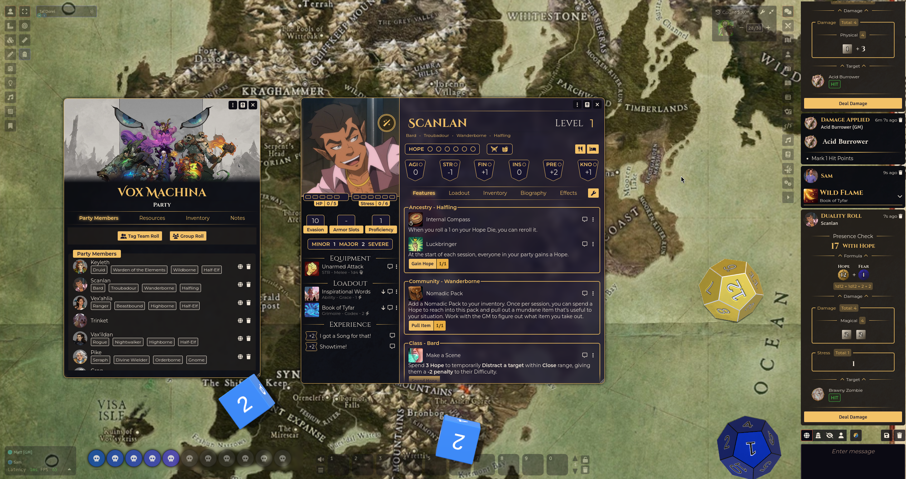

Screenshot Gallery


Welcome to the unofficial, community made
Daggerheart system for FoundryVTT.
This system is designed to capture
the full flavor of the 2d12 Hope & Fear dice mechanics, character builds, and collaborative storytelling
magic.
The system includes complete character creation using card choices, Hope and Fear dice mechanics, team tags, group checks, and unique features tailored for the Daggerheart experience.